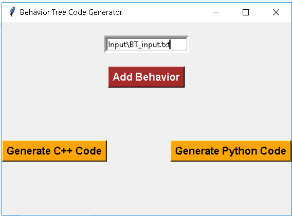
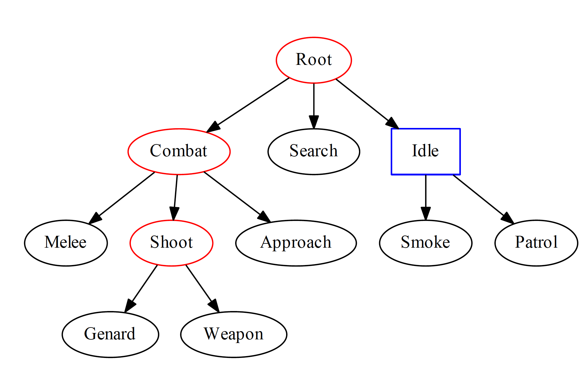
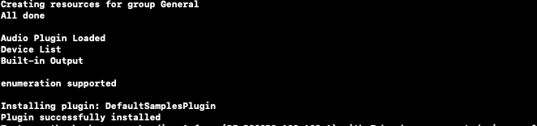

Project Screenshots
-

Sample browser
Allows user to run and play graphic actions rendered in OGRE
-

Behaviour Tree Generator
User can input Commands in UI to create C++ and Python code
-

Behaviour Tree Visualization
-

Game created using Behaviour Tree
Create tile scenes for different levels.
-

Sprite Editor
Visualize what a character should look like while moving.
Behaviour Tree Generator
To generate code for creating Game Behaviour
Removes the overhead of programmer to write complex code for behaviour tree by automating the generation entire boiler plate code of behaviour trees with logic. Visualizes Behaviour tree by generating tree diagram in the output/ as a pdf which is easy for interpretation. The code could intelligently detect Selector(red circle) and Sequence(green square) Also, the code could identify the leaf nodes which could be actions or conditions The input for the model can be easily modified
Game using BT Code
using the C++ and Python code generated by our tool
Better graphics and animations. Slower and controller animations to make the look clearer.
Ogre Challenges
Including Audio framework deprecations
Problems we faced 1. Error 404: no website, no documentation. Half the links were broken or too old to be used. 2. We couldn't get Ogre3D to build on Windows and ran into a lot of issues with Visual Studio. 3. On Mac, first we couldn't get cmake running. After a lot of messing around, we got cmake working by using Xcode as the compiler which we changed by using the "-G Xcode" flag. Then by default a 32-bit build was being generated. Unfortunately, Mojave doesn't allow the execution of 32-bit files, and it didn't even give any error message except an Abort trap. Again after a lot of messing around, we changed the cmake file to force it to create it a 64-bit build that could finally be opened in Xcode and built for execution. This alone took around 2 days. We even consulted TAs Trevor and got his valuable suggestions on time. 4. Even after getting the build working on 1 machine, when we tried running it on another machine, all we got was a black screen. Even after repeating the same steps, all we got was a black screen. This issue is still unresolved as we couldn't find the reason for this. We tried updating the SDL libraries as that was the most common reason for this, but even that didn't work. This took another day. 5. Half of the libraries and frameworks have been deprecated. ALut was a framework used in conjunction with OpenAL for easy loading of files that was deprecated by Apple and we couldn't find any alternative for it. Other option was to write a function to open the wav file loading at the low-level manually and we ran into a lot of issues with that. 6. We tried building on top of OgreAL, but that again didn't have any documentation and half the links were broken. So we tried tinkering around and make it using cmake. But it came with a lot of dependencies including Boost, OIS, Ogre3d itself and a couple of others for which we couldn't get cmake to pick up the correct source folders correctly. We spend around 2 days getting this to work. 7. Even after integrating all our header files in with the Ogre3d source code, we couldn't get the sound, because Ogre SampleBrowser demands the Plugin to be compiled and built into a framework file. Due to the above reasons, we couldn't get that to work, so at runtime, we started getting errors which were all linked to this library issue. In theory, this meant our code was correct, just it couldn't be called due to lack of proper headers.
Audio Library
using OpenAL
PyOgre and Python-Ogre have been discontinued. Ogre1.10 "Xalafu" provides Python bindings directly as a component but the information there is mentioned outdated. To integrate with OpenAL without python bindings was a big challenge.
Post Mortem Review
Behaviour Tree and OGRE game
Support for OGG files: we were trying to provide support for ogg audio files as well, but we couldn't get the library working properly. With a little additional effort and some tweaking, we could incorporate the ogg codec in the plugin and the ogg audio files should work as well. We could provide options to modify the sound clips, like trim, normalize etc and provide special effects like reverb, phaser, etc. This would require little code as they are mathematical calculations peformed on the sound clip which are freely available. We could further create a fancy GUI for the developer to select sounds, assign these sounds to different characters and their different actions, and also to apply various effects as mentioned above.
How To Use
Copy the Audio folder into $ogre_source_code$/Samples and run cmake to compile.
For mac:
1. Open terminal and create a new directory, and run the following command:
cmake -G Xcode